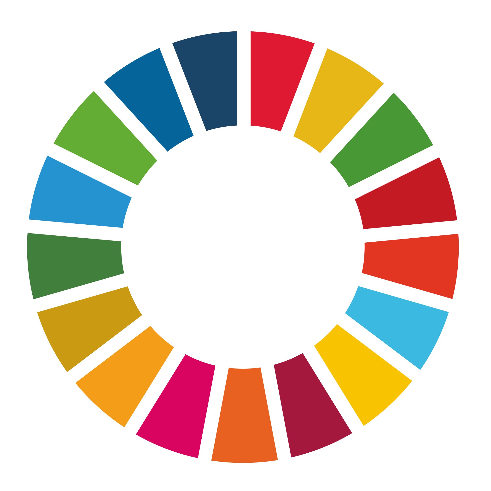

The 2015 Promise
Of the 17 goals outlined in 2015, we take a closer look at goals 6-9 focusing on infrastructure. They are:
SDG 6: Safely managed water
– → – (+— pp)
2015 → —
SDG 7: Electricity access
– → – (+— pp)
2015 → —
SDG 8: Economic growth
– → – (+— pp)
2015 → —
SDG 9: Internet users
– → – (+— pp)
2015 → —
Based on compared population-weighted global averages from 2015
SDG 6: Safe to Drink Water
SDG 8: Decent Work & Growth
The map switches to GDP per capita (US$). The chart relates prosperity to foundational
access: GDP per capita vs Electricity, Internet, and
Water (latest year), sized by population and colored by region.
GDP per capita vs access (latest year): faceted by metric
SDG 9: Going Online
As connectivity grows, internet access has become vital for innovation, education, and economic growth.
This visualization compares regional internet usage (% of population) since 2015.
Conclusion
Since 2015, most regions have improved access to water, electricity, and the internet,
but Central Africa continues to lag behind. Limited infrastructure and investment have
slowed progress, leaving many communities disconnected from essential services.
- Invest in infrastructure to reach Central Africa’s underserved areas
- Support governance and maintenance alongside new development
- Foster international cooperation to close the global access gap
